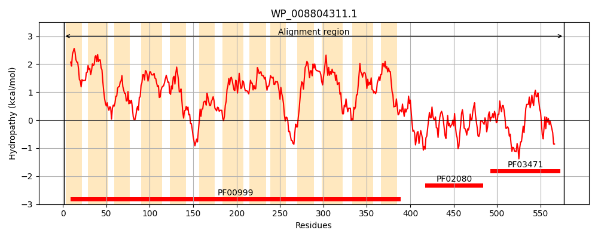
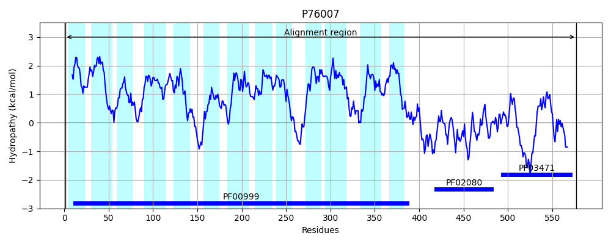
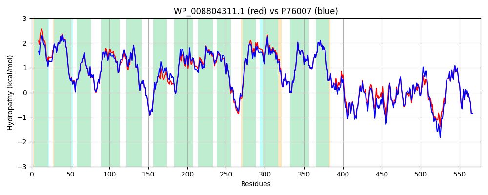

Hit Accession: P76007
Hit TCID: 2.A.36.6.11
Hit Description: gnl|BL_ORD_ID|11429 gnl|TC-DB|P76007|2.A.36.6.11 K(+)/H(+) antiporter NhaP2 OS=Escherichia coli (strain K12) GN=cvrA PE=1 SV=2
Mach Len: 577
e:0.000000
Query TMS Count : 13
Hit TMS Count: 13
TMS-Overlap Score: 13.550000
Predicted Substrates:CHEBI:9175;sodium(1+)
BLAST Alignment:
Score: 2636 , Bit scores: 1019 bits, E-value: 0.0e+00, Alignment length: 577, Percentage identity: 89
Query: 1 MDAAAVISLFILGSVLVTCSILLSSFSSRLGIPILVIFLAIGMLAGIDGIGGIPFDNYPFAYMVSNLALAVILLDGGMRTQASSFRVALWPALSLATVGVLITSALTGMMAAWLFKLDMIEGLLIGAIVGSTDAAAVFSLLGGKGLNERVGSTLEIESGSNDPMAVFLTITLIEMIQQHQTGLSWMFAVHIIQQFGLGIAIGLGGGYLLLQMINRIVLPAGLYPLLALSGGIMIFAVTTTLDGSGILAVYLCGFLLGNRPIRNRHGILQNFDGLAWLAQIAMFLVLGLLVTPSDLLPIAIPALLLSMWMIFIARPLSVFAGLLPFRGFNLRERVFISWVGLRGAVPIILAVFPMMAGLDNARLFFNVAFFVVLVSLLLQGTSLSWAAKKAKVVVPPISWPISRVGLDIHPENPWEQFVYQLGADKWCIGAALRDLHMPPETRIAALFRNNALLHPTGSTRLREGDILCVIGREHDLPALGKMFSQSPPVALDQRFFGDFILDAEARFADVAQIYGLDGGEEFREHQQSLGEVVQQLLGAAPVVGDQVEFAGMVWTVAEKENDHVLKVGVRVAEDEAE 577
MDA +ISLFILGS+LVT SILLSSFSSRLGIPILVIFLAIGMLAG+DG+GGIPFDNYPFAYMVSNLALA+ILLDGGMRTQASSFRVAL PALSLAT+GVLITS LTGMMAAWLF LD+IEGLLIGAIVGSTDAAAVFSLLGGKGLNERVGSTLEIESGSNDPMAVFLTITLI MIQ H++ +SWMF V I+QQFGLGI IGLGGGYLLLQMINRI LPAGLYPLLALSGGI+IF++TT L+GSGILAVYLCGFLLGNRPIRNR+GILQNFDGLAWLAQIAMFLVLGLLV PSDLLPIAIPAL+LS WMIF ARPLSVFAGLLPFRGFNLRERVFISWVGLRGAVPIILAVFPMMAGL+NARLFFNVAFFVVLVSLLLQGTSLSWAAKKAKVVVPP+ P+SRVGLDIHPENPWEQFVYQL ADKWC+GAALRDLHMP ETRIAALFR+N LLHPTGSTRLREGD+LCVIGRE DLPALGK+FSQSPPVALDQRFFGDFIL+A A++ADVA IYGL+ G E+R+ QQ+LGE+VQQLLGAAPVVGDQVEFAGM+WTVAEKE++ VLK+GVRVAE+EAE
Sbjct: 1 MDATTIISLFILGSILVTSSILLSSFSSRLGIPILVIFLAIGMLAGVDGVGGIPFDNYPFAYMVSNLALAIILLDGGMRTQASSFRVALGPALSLATLGVLITSGLTGMMAAWLFNLDLIEGLLIGAIVGSTDAAAVFSLLGGKGLNERVGSTLEIESGSNDPMAVFLTITLIAMIQHHESNISWMFIVDILQQFGLGIVIGLGGGYLLLQMINRIALPAGLYPLLALSGGILIFSLTTALEGSGILAVYLCGFLLGNRPIRNRYGILQNFDGLAWLAQIAMFLVLGLLVNPSDLLPIAIPALILSAWMIFFARPLSVFAGLLPFRGFNLRERVFISWVGLRGAVPIILAVFPMMAGLENARLFFNVAFFVVLVSLLLQGTSLSWAAKKAKVVVPPVGRPVSRVGLDIHPENPWEQFVYQLSADKWCVGAALRDLHMPKETRIAALFRDNQLLHPTGSTRLREGDVLCVIGRERDLPALGKLFSQSPPVALDQRFFGDFILEASAKYADVALIYGLEDGREYRDKQQTLGEIVQQLLGAAPVVGDQVEFAGMIWTVAEKEDNEVLKIGVRVAEEEAE 577 | Protein Hydropathy Plots: |
|---|
|  |  |
Pairwise Alignment-Hydropathy Plot:
|
|---|
|  |